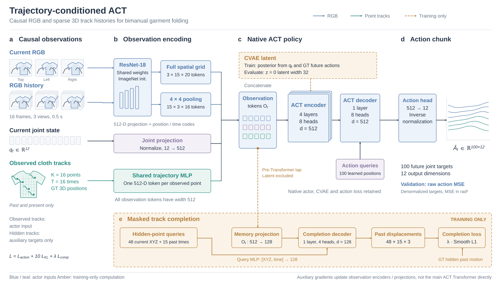
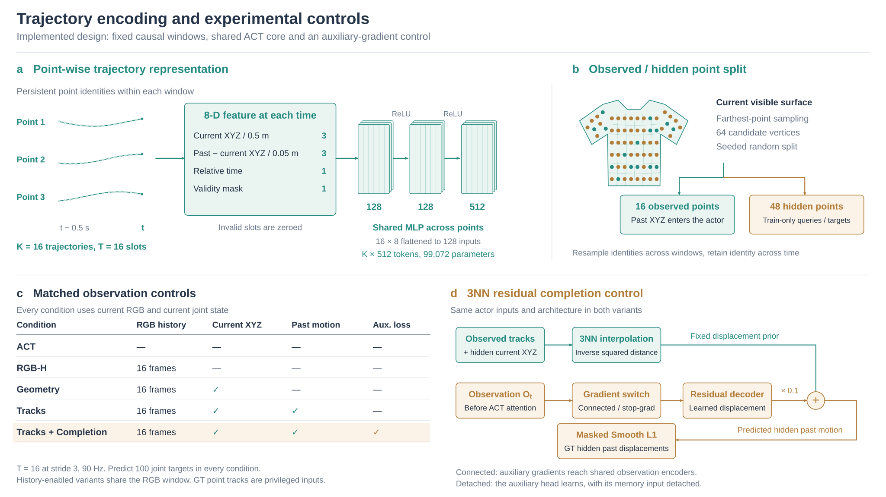

Trajectory-conditioned ACT
English architecture figures for slides. The overview shows the implemented inference and training paths. The detail figure explains point encoding and the controlled model variants.
Figure 1. Architecture overview

Blue: RGB and policy. Teal: observed point histories. Amber: training-only computation. The hidden-point completion branch receives pre-Transformer observation tokens, rather than the ACT attention output. Hidden trajectories remain auxiliary supervision.
Figure 2. Trajectory representation and controls

Each point uses sixteen eight-channel time slots. The MLP produces one512-D token per observed trajectory. The residual control adds a learned correction to fixed3NN track completion. It does not add an action residual.
All garment views, point layouts and output curves are schematic. The diagrams describe the implemented pilot architectures, without claiming a performance improvement or a deployed RGB-based tracker. Ground-truth3D tracks are privileged simulation observations.